事故車・不動車も
無料引き取り
足立区内は無料。区外は片道約30分圏内が目安。
圏外も状況によりご相談ください。お持ち込みも、どこからでも歓迎です。
愛車の最後まで、地域のお店に。
受付 月〜土 10:00〜18:00
※足立区内は引き取り無料。足立区外は環七店から片道約30分圏内が目安。圏外も状況によりご相談。
買取の可否・金額は車種や状態によります。
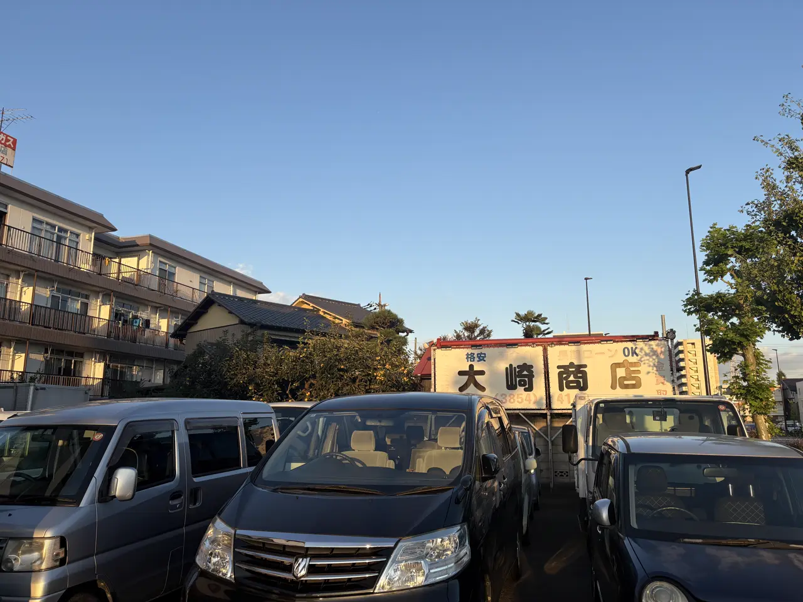

地域の皆さまに
親しまれるお店を目指して
お車の状態やご希望を
まずはお聞かせください。
ご指定の場所まで伺います。
対応エリア内は出張費0円。
お持ち込みも歓迎です。
車種・状態に応じて査定。
廃車手続きも代行します。
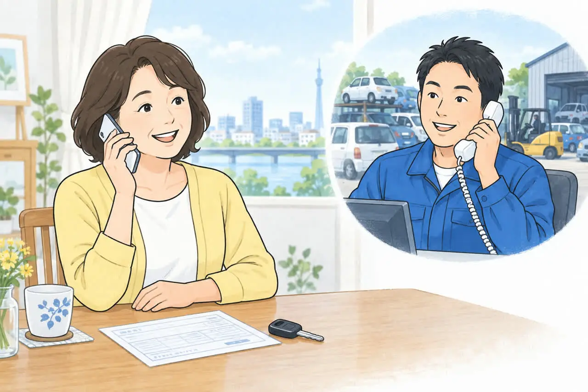
初めての廃車相談に廃車のご依頼から現金お支払いまでの流れ電話1本で進む3ステップを、イラスト付きでご紹介します。記事を読む →足立区内は無料。区外は片道約30分圏内が目安。
圏外も状況によりご相談ください。お持ち込みも、どこからでも歓迎です。
廃車手続き代行・軽自動車の廃車も無料です。
車種や状態によっては、その場で現金買取もできます。
解体の認可を受けた入谷店で、自社で解体します。
廃車手続きもお任せください。
車は店頭で見られます。
在庫はお問い合わせください。
お困りの内容に近いものを選ぶと、くわしい記事の一覧が開きます。
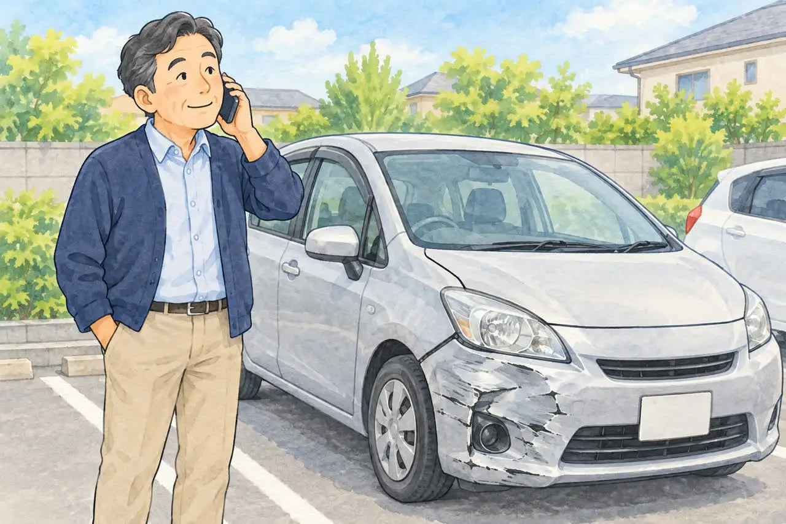
事故・動かない車エンジンがかからない・事故・水没・レッカー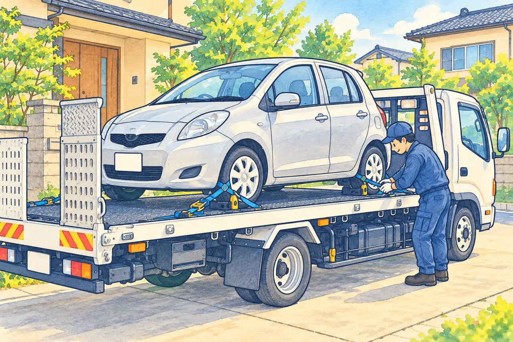
車検切れ・古い車車検が切れた・古い車や走行距離が多い車必要書類・紛失必要書類・車検証や印鑑証明書のこと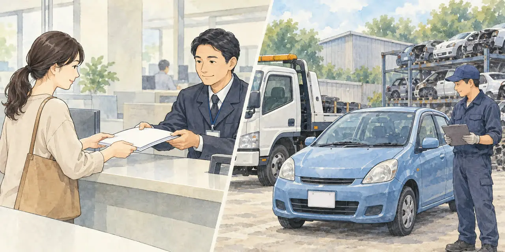
手続き・窓口自分でやる？日数・窓口・一時抹消と永久抹消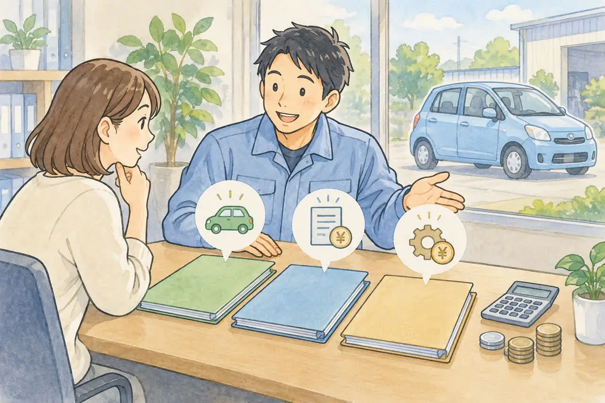
お金・還付金費用・還付金・自賠責・自動車税名義・ローン・会社・家族名義が違う・ローン・社用車・家族の車引っ越し・買い替え引っ越し・買い替えで車を手放すとき はじめての方・お店電話のあとの流れ・お持ち込み・お店のこと
はじめての方・お店電話のあとの流れ・お持ち込み・お店のことSERVICE
普通自動車・軽自動車をはじめ、どんなお車でも対応。
引き取り・買取・廃車手続き・タイヤ／バッテリーの引き取り・中古車や中古部品の販売の詳細はこちら。
中古タイヤ・中古部品・中古車を、店頭でご覧いただけます。在庫は日々変わります。お探しのものがあれば、お電話でお問い合わせください。
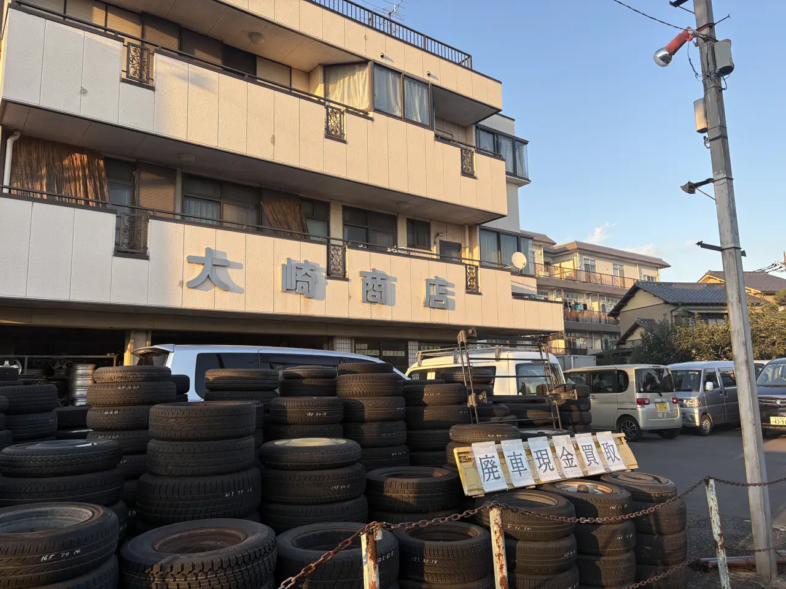
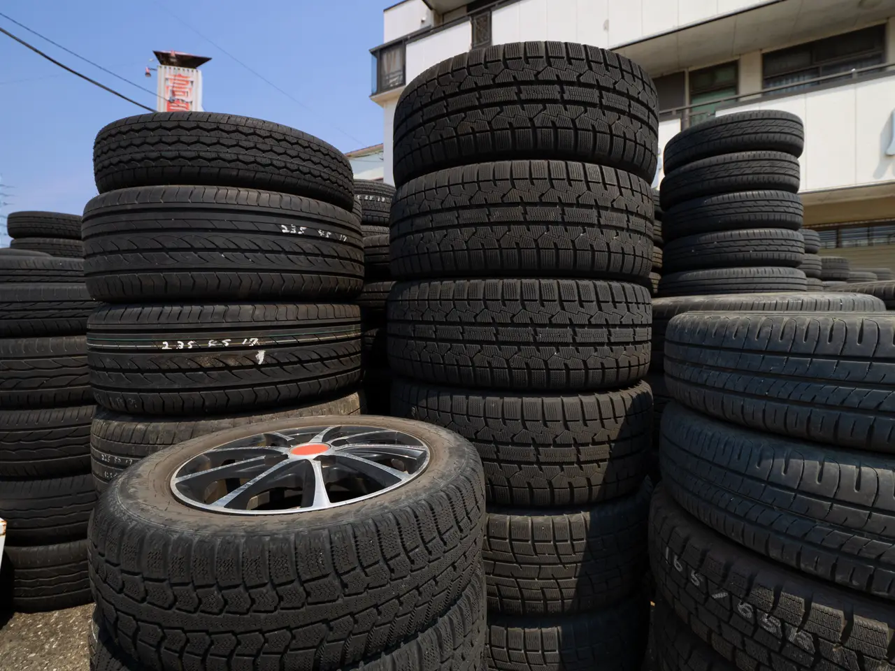
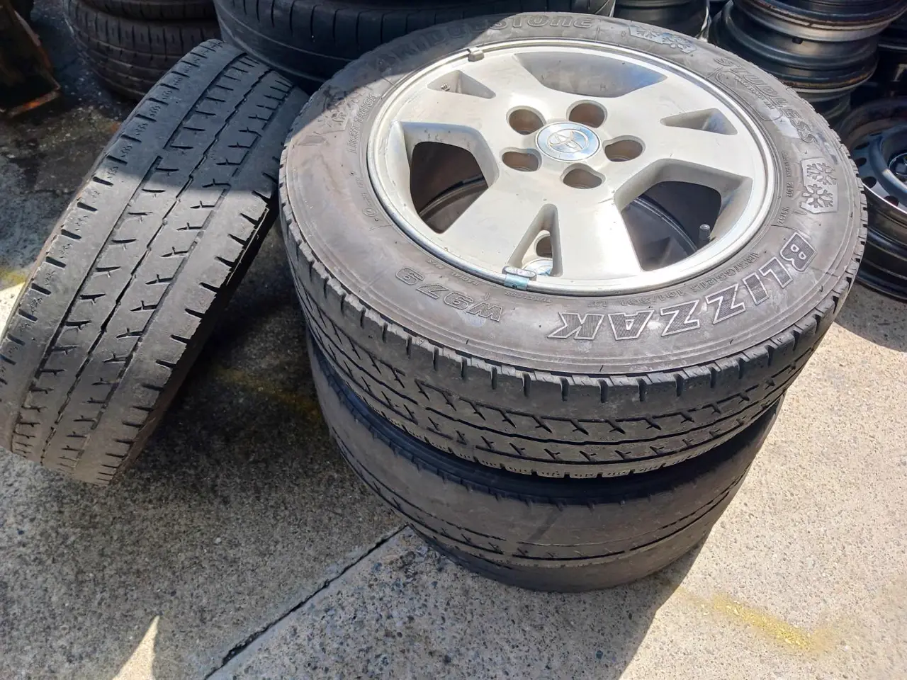
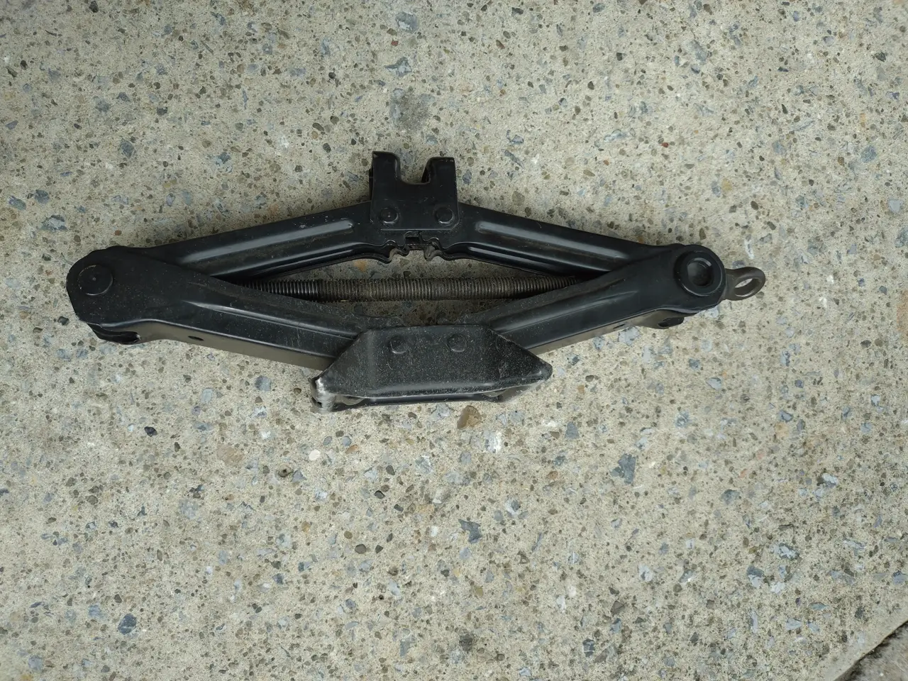
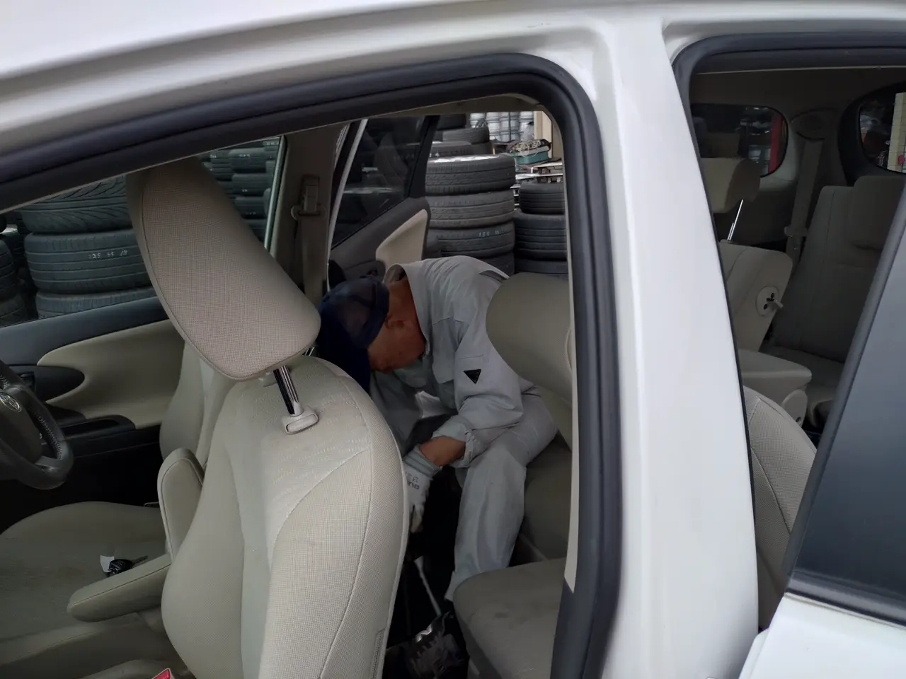
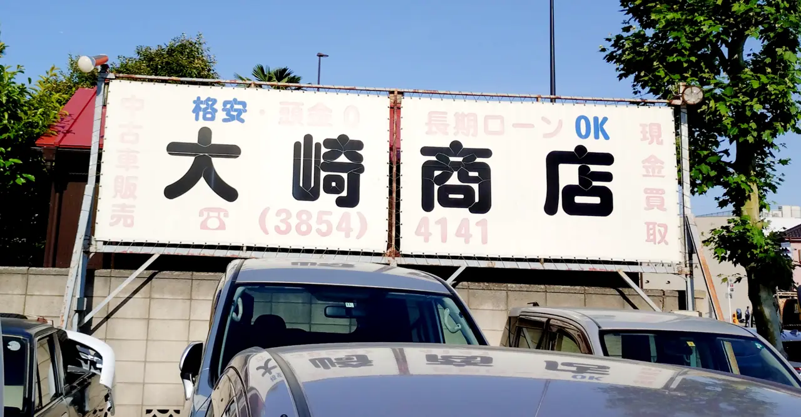
〒123-0872 東京都足立区江北7丁目1−3
環七沿い／舎人ライナー 西新井大師西駅
地図を見る ↗
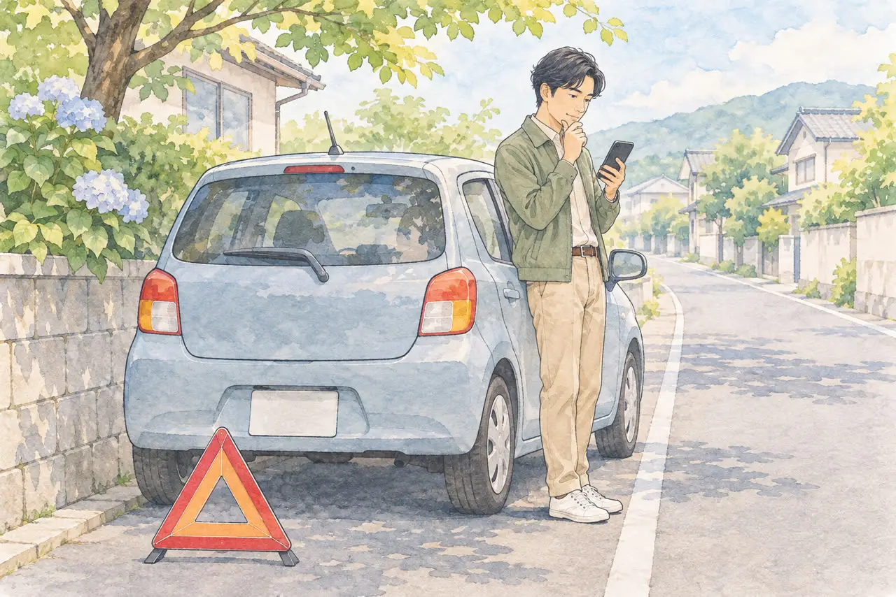


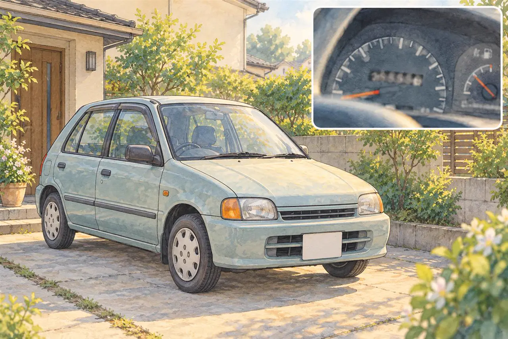

CONTACT
引き取りのご相談・部品のお問い合わせはこちら
☎ 03-3854-4141✉ メールで相談する環七店：月〜土 10:00〜18:00（日曜・祝日休業）
ご来店の前に、お電話ください。引き取りなどで外出していることもあります。